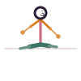

Twisted Pose
Vakrasana
How to
Sit with the legs extended, bend one knee and place that foot outside the opposite thigh, then twist toward the bent knee using the opposite arm as leverage.
Benefits
- A gentle, accessible spinal twist
- Improves digestion
- Suitable as an early step toward deeper seated twists
Practice
Hold for 5-8 breaths per side, sitting tall before twisting.

Get the Asanas appFree, no ads, works offline
Google Play
General information, not medical advice. If you have a health condition or pain, talk to a doctor or qualified teacher first.